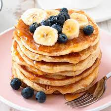

Banana Pancakes Recipe

Wake up on the right side of the bed with a stack of sweet, cozy, and simple banana pancakes
This top-rated banana pancake recipe is easy to make and it comes together in just 15 minutes,
so you don't have to wake up early to enjoy a satisfying breakfast.
Learn how to make, store, and serve the best banana pancakes ever.
Serves 6
Ingredients
- 1 cup all-purpose Flour
- 1 tablespoon white Sugar
- 1 Egg, beaten
- 1 cup Milk
- 2 tablespoons Vegetable Oil
- 1/4 teaspoon Salt
- 2 teaspoons Baking Powder
- 2 ripe Bananas, mashed
Steps
- Combine flour, white sugar, baking powder, and salt in a bowl.
Mix together egg, milk, vegetable oil, and bananas in a second bowl.
- Stir flour mixture into banana mixture; batter will be slightly lumpy.
- Heat a lightly oiled griddle or frying pan over medium high heat.
Pour or scoop the batter onto the griddle, using approximately 1/4 cup for each pancake.
Cook until pancakes are golden brown, 3 to 5 minutes per side. Serve hot.